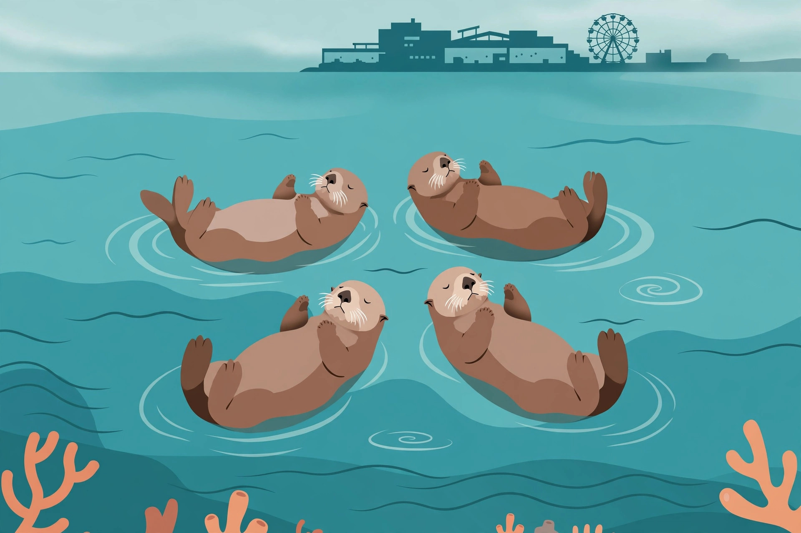

中日ドラゴンズの根尾昂投手が25日、約3年前から自分や家族らに嫌がらせの投函・郵送が続いていることを明かし、警察に相談していると報告。今朝も被害のニュース共有が続き、嫌がらせを「歪んだ愛情」と読み替え、応援のエネルギーの向け方を問い直す声も出てきた。
海遊館が25日、ラッコ4頭を12月7日から9年ぶりに展示すると発表。4頭はアラスカで保護されたもので、名前はウーナ、ニピ、チャリィ、イマック。国内のラッコは鳥羽水族館のメイ1頭のみだったが、5頭になる。Instagramでは来館情報つきの告知リールが広がり、「絶対見に行きたい！」という声も。
YOSHIKIの謝罪を受け、ファンのあいだで「その言葉はとても温かかった」「叩く方がそもそもおかしい」という擁護と鎮静化の語りが広がる。一方で過去の経緯を引き合いにした批判も並走している。
ABEMAの夫婦リアリティーショー第4話が25日23時に放送。ケンタの酒癖に自分の夫を重ねる共感の投稿や、ススムとアキコへの考察が広がる。夫婦の本音に自分の話を重ねる語りが中心。
25日20時過ぎからPayPayクレジットで障害が発生し、カード払いができなくなっている。残高払いは通常通り使える。原因は調査中で、サイバー攻撃は確認されていない。SNSでは「PayPay使えますか？」という確認と、障害のお知らせの拡散が中心。
バンダイのガシャポン「MARVEL スパイダーマン めじるしアクセサリー」が11月第3週より順次発売。全5種・1回400円で、ポーズ違いのデフォルメフィギュアがチャームになる。発売週が順次で店舗ごとに時期が違うため、「いつ出るの？」という問いと入荷情報の共有が話題の中心。
5大ドームツアー「Snow Man DOME TOUR 2026-2027 ALL SUITE」の名古屋公演が今日11月26日からバンテリンドーム ナゴヤで開幕。4日間の日程で、開演は26〜28日が17:00、29日が15:00。初日朝には「楽しいでいっぱいの4日間になりますように」という祈りの語りが出ている。 夜には初日のレポートが出始め、「アンコールまで外周フロートなし」「神アプデ過ぎて涙出る」という喜ぶ声と、「フロートのところ全部なくして踊ってたって本当ですか？？皆が来て近くに来てくれた感じがしてよかったのにな…」という惜しむ声が並ぶ。
福岡市の刺殺事件で、別件の暴行容疑で49歳の男が逮捕されたことが報じられ、逃走ルートをめぐる素人推理の投稿が今朝も出る。「逮捕」と報じられるが刺殺容疑での逮捕ではなく、西新駅での暴行容疑による別件逮捕で、刺殺事件への関与は捜査中。
シリーズ第24弾のタイトルが『ファンたじっくプリキュア！』に決定し、11月26日に発表。キャッチフレーズは「かがやけ！みんなの笑顔！ファンたじっくなパーティーへようこそ！」。ロゴのキャンディや星、クラッカーのモチーフからテーマを推測する語りが広がる。
バンダイのガシャポン「サンリオキャラクターズ バレリーナめじるしアクセサリー」が11月第4週より発売。全6種・1回300円で、バレリーナ衣装にオーロラ塗装。同じ第4週にはたまごっち、ディズニー、ピクミンなどのめじるしアクセサリーも一斉展開。朝のスパイダーマンめじるし（第3週）に続く「めじるし」シリーズの連続展開になっている。トレンドの起点となった投稿は「可愛いな」「大阪いつくるのー！！」「今月ガチャ沼えぐい」とつづる。
バンダイの食玩「矢沢あい ラバークリップ付きグミ」が11月23日に発売。『天使なんかじゃない』『ご近所物語』『Paradise Kiss』『NANA』の4作品から全15種、1個385円。1BOXは12個入りで全種は揃わず、2箱買っても偏りが出ることに不満の声が出ており、交換や譲渡を求める動きが広がる。 夜の時点でもトレンドに残り、95.4K postsに。新たに「札幌のどこに売ってるのーーーー！近くのコンビニ、マックスバリューにはなかった」という、地域での販売場所を問う声が出てきた。2箱買っても偏る投稿は122いいね・48件の返信まで伸びている。
ブラックフライデー等のセールで、エバークックのフライパンの購入や買い替え検討が広がる。今朝の投稿は「これは買いでよろしいか？ エバークック初めて購入、使うぞーーー！」とつづり、1,736いいね・120件の返信を集めた。一方で焦げ付きへの不満を訴える投稿もあり、購入の期待と使用感の不安が並走している。
高知 蔦屋書店で「MINI パンどろぼう POP UP STORE」が11月28日〜2027年1月10日に開催されるのを前に、限定グッズ（リュック3,300円など）の購入代行を求める声が出ている。一方で「代行は転売」「本当に欲しい人が現地に行くべき」という批判も出ており、代行をめぐる対立が見える。北海道では「パンどろぼうひろば」が11月24日に初日を迎え、行ってきた報告も広がる。
ファミリアチェックのトートバッグが11月26日10時から再販され、赤チェックは4分で売り切れたと報告されている。買う前に「本命は白黒の小さい方のトートバッグですが、値段の割には生地がペロンペロンですか？？」と使用感を問いかける投稿も出ており、再販の争奪と購入前の相談が並走している。
ぬいぐるみ＆雑貨ブランド『mojojojo』の限定カプセルトイ「mojojojo めじぷちチャーム™」が11月19日よりイオンファンタジーの完全キャッシュレスカプセルトイマシン「かぷえぼ」限定で順次展開。全5種・1回550円。Threadsでは「mojojojoガチャってもう出たとこありますか？？」という問いと、各地の売り場での目撃情報が相次ぐ。Instagramでは「フェイスマスコット4」（全8種・400円）の筐体写真も並ぶ。
Mrs. GREEN APPLEの大森元貴プロデュース「<Premium> MOTOKI OHMORI × FEILER ハンカチ」の二次抽選販売の当選発表が今日11月26日12時から順次メールで届き、当選報告が相次ぐ。Ringo Jam年会費コース会員向けの二次抽選で、価格は3,520円、発送は2027年2月上旬予定。当選メールが届いた人と届かない人の投稿が並ぶ。
timeleszの橋本将生と篠塚大輝が、11月26日19:00からの日本テレビ系『クイズ！あなたは小学5年生より賢いの？賞金1000万円SP』に初参戦。篠塚は一橋大学に現役合格した経歴、橋本は英語が得意で「高学歴アイドル」として紹介される。放送後には「橋本博物館採用してたら1千万円やったやんけ」という1000万円に届かなかったことを惜しむ声も。一方で新曲MVの再生数を気にする声も出ている。
映画『VIVANT』は12月4日（金）に全国公開。公開初日のオープニングセレモニー（都内某所、屋外オールスタンディング、招待450人）の観覧応募は11月24日正午に締め切られ、当選者には11月26日にメール連絡される予定だった。Threadsでは「当選連絡来た人いますか？もうお昼過ぎたし、今来てないってことはやっぱり落選なのかなぁ」という声と、「当選メール届き始めたみたい」という報告が並ぶ。
中日ドラゴンズの根尾昂投手が25日、インスタグラムのストーリーズで「約3年前から、私や家族、会社・関係者、友人宛てに嫌がらせの投函・郵送が継続して届いています」と明かし、警察に相談・対応を進めていると報告した。投函物とみられるはがきなどを画像処理した上で投稿した（中日スポーツで確認）。Threadsでは01:35の投稿が記事を共有し、こういう行為をする人たちが集団犯罪などをするのだろうという見方を添える。01:27の投稿は「ネットの誹謗中傷どころじゃない」「刑事罰のレベル」として、早く捕まってほしいという声。被害の告白に対しては論争ではなく、同情と厳罰を求める声が中心になっている。
海遊館は25日の会見で、12月7日（月）からラッコ4頭を「アリューシャン列島」水槽で展示すると発表した。展示は2017年10月10日以来約9年ぶり。4頭はアラスカ・シーライフ・センターが2025年5〜10月にアラスカの海岸で保護したもので、名前はウーナ、ニピ、チャリィ、イマック。4月に日本に到着し、バックヤードで飼育されている。国内のラッコは鳥羽水族館のメイ1頭のみだったが、5頭になる（FNN、産経、朝日などで確認）。Threadsでは、13年ほど前から海洋写真家をフォローし、アラスカの保護施設の動画も見てきたファンが「この子達が日本それも海遊館にやって来るとは」と喜びを語る。鳥羽水族館まで2時間半かけて通っているファンも「こんな近くに来てくれるなんて」と喜ぶ。Instagramでは旅行情報アカウントの告知リール（1.7Kいいね）が時間指定予約や大人2,700円〜といった来館情報をまとめ、関西の子連れおでかけアカウントのリールは「絶対見に行きたい！」という声で伝える。発表直後の夜から、来館の実務情報つきの告知と「見に行きたい」という期待の語りが並走している。
YOSHIKIのLUNA SEAドラム参加辞退をめぐる騒動の続報。01:13の投稿は、YOSHIKIが謝罪したことを受け「その言葉はとても温かかった」として、SUGIZOの誕生日メッセージへの「迂闊な発言でお騒がせして申し訳ない」という趣旨の言葉と「もっとみんなが喜ぶタイミングで」という前向きな姿勢を伝える。01:14の投稿は「ミュージシャン同士の絆なんてファンが思ってる以上のもんでしょうに」として、SUGIZOだからこそhideの代役を任されたという見方を示し、「叩く方がそもそもおかしい」と擁護する。一方で25日19:59の投稿は、過去に叩かれたTAIJIやSUGIZOの経緯を引き合いにYOSHIKIへの批判を語るもので、批判の語りも並走している。背景は前日のログによる（YOSHIKIの謝罪そのものの報道記事は未確認で、ファンの投稿の受け止めとして記録する）。
ABEMAのオリジナルリアリティーショー『この最低な夫婦の終わり』は全8話、毎週水曜23時に無料放送。第4話は11月25日（水）23時から放送され、ナナとケンタの妊活・酒癖をめぐるイタリアでの旅と、ススムとアキコの広島での親戚との食卓が描かれた（ABEMAのプレスリリースで確認）。Threadsでは00:55の投稿が、第4話でケンタがナナに直してほしいと思っている点に、自分の夫の酒癖を重ねる。普段は優しい夫が酔うと口調が荒くなり、録音して聞かせたら反省して酒量を調整するようになったという体験談が添えられている。00:50の投稿は、ススムとアキコについて「よく暴力沙汰になってないよ」として、ススムの忍耐を評価し、アキコの逆プロポーズは早まったかもしれないと考察する。夫婦の本音に自分の話を重ねる共感の語りが中心。
PayPayは25日、アプリの「PayPayクレジット」で障害が起きていると明らかにした。同日20時過ぎから決済ができなくなっており、原因は調査中だがサイバー攻撃は確認されていない。残高払いには問題は起きていない（NHK、共同通信などで確認）。Threadsでは02:44の投稿が「PayPay使えますか？」と短く問いかける。トレンドの起点となった投稿は、25日20時過ぎからの障害を伝え、残高払いは通常通り使えること、原因は調査中で復旧見通しは未発表であることをまとめたお知らせグラフィック。障害そのものへの不満というより「使えるか」という確認と、残高払いという代替手段の共有が中心になっている。
ファミリーマート限定「スライムまん」の発売3日目。Instagramではドラクエの戦闘画面風に合成した画像（11いいね）が「スライムまんが あらわれた！」とつづる。紅葉と一緒に撮る10枚カルーセル（200いいね）では、秋の風景の中でスライムまんを撮る楽しみが広がっている。コンビニ新商品の紹介カルーセル（160いいね）でも、スライムまんが並ぶ。話題は顔の個体差の笑いから「ゲーム画面風の遊び」「季節の風景と一緒に撮る」へ広がり、買って食べるだけでなく「撮って遊ぶ」が参加の作法になっている。
バンダイのガシャポン「MARVEL スパイダーマン めじるしアクセサリー」は2026年11月第3週より順次発売。1回400円（税込）、全5種（A スイングポーズ、B ひらりポーズ、C ランディングポーズ、D さかさまポーズ、E アクロバットポーズ）で、映画『スパイダーマン：ブランド・ニュー・デイ』のタイアップ。初回発売後も複数回の出荷が予定されている（電撃ホビーウェブ、ガシャポン公式などで確認）。Threadsでは11月20日の投稿が「MARVELとスパイダーマンのめじるしっていつなん？？？今週もう終わるけど」と発売時期を問いかけ、25日の投稿は「スパイダーマンとナルミヤ🙌」とつづる。Instagramではガチャ情報アカウントの告知グラフィック（4.1Kいいね）が全5種・1回400円とポーズ名をまとめ、MARVEL専門アカウントの開封リール（430いいね）では5体を並べて「正解だった」と締める。発売週が「第3週より順次」で店舗ごとに時期が違うため、「いつ出るの？」という問いと入荷情報の共有が話題の中心になっている。
Snow Manの5大ドームツアー「Snow Man DOME TOUR 2026-2027 ALL SUITE」は、札幌に続く2か所目として11月26日（木）〜29日（日）にバンテリンドーム ナゴヤで4日間開催。開演は26〜28日が17:00、29日が15:00。前日の11月25日にはグッズのプレ販売があった（ウェブ検索で確認）。Threadsでは今朝08:48の投稿が「今日から名古屋バンテリンドーム✨☃️✨☃️ スノくん達もスノ担さん達も みんなみんな楽しいでいっぱいの4日間になりますように！！！」とつづる。初日朝の投稿が、公演そのものより「楽しい4日間になりますように」という祈りの語りになっている。
25日午後0時半ごろ、福岡市西区のJR九大学研都市駅西側の駐輪場で、勤務中だった石川嘉章さん（70）が刃物のようなもので刺され死亡した。警察は午後3時すぎ、特徴のよく似た男をJR香椎駅付近の路上で発見し、事情を聴いた。25日午後8時半ごろ、福岡市地下鉄・西新駅の構内で駅員の頭を殴ったとして、川谷典雄容疑者（49）を暴行容疑で逮捕した。警察は川谷容疑者が刺殺事件にも関与した疑いがあるとみて捜査している（KBC、FNN、テレビ朝日などで確認）。つまり香椎駅での身柄確保は「刺殺容疑での逮捕」ではなく別件逮捕で、刺殺事件への関与は捜査中である。Threadsでは今朝08:14の投稿が、西鉄貝塚線を使った移動や「貝塚→西鉄香椎駅を選んだのか」「西鉄からJRの移動がスムーズなのが香椎なのを知っていたのではないか」といった素人推理を長文でつづる。08:29の投稿は「何故、千早駅で降りなかったのか」という別のスレの議論に触れ、08:44の投稿は香椎駅の規模や路線の接続から「さらに逃走を企ててたんじゃないかと邪推しちゃう」とつづる。報道の空白を、駅の接続や路線の知識で埋めようとする動きが見える。
プリキュアシリーズ第24弾のタイトルが『ファンたじっくプリキュア！』に決定し、2026年11月26日に発表された。キャッチフレーズは「かがやけ！みんなの笑顔！ファンたじっくなパーティーへようこそ！」。ロゴにはキャンディや星、クラッカーなどパーティーを連想させるモチーフがあしらわれている。現在放送中の『名探偵プリキュア！』に続く新作で、詳細は改めて発表される（ABCマガジン、シネマトゥデイなどで確認）。Threadsでは今朝08:47の投稿が「魔法系なのかな？手品とか？飴ちゃんあるしお菓子かな？ 字体的にはわんプリみたいなキャピキャピかわいい感じな気がする💖」と、ロゴのモチーフや字体からテーマを推測する。Instagramでもタイトルロゴの告知グラフィックの共有が広がっている。発表の「余白」がファンの推測遊びを生んでいる。
今朝08:39の投稿は「期待されながらなかなか結果が出せていないことに対する歪んだ愛情なんだとは思うが、嫌がらせしたところで状況がよくなるわけでも無かろうに…。んなことに割くエネルギーがあったら、二軍戦観に行くとか、いろんな手で支援してあげればいいのにね。」とつづる。被害への同情の語りに加え、嫌がらせを「歪んだ愛情」と読み替え、応援のエネルギーの向け方を問い直す見方が出てきた。08:42には被害のニュースを共有する投稿も出ており、深夜帯のトレンドが朝も続いている。
02:46時点のトレンドだった海遊館・SUGIZO・『この最低な夫婦の終わり』・PayPayは、08:46時点の一覧から外れた。PayPayの障害とSUGIZOの騒動は、朝の時点では新たな動きが見えず、話題が落ち着いたように見える。海遊館のラッコ発表と『この最低な夫婦の終わり』第4話も、発表・放送の翌朝には一覧から外れ、関心が次の話題へ移っている。
バンダイのガシャポン「サンリオキャラクターズ バレリーナめじるしアクセサリー」は2026年11月第4週より発売予定。全6種（ハローキティ、マイメロディ、クロミ、ウサハナ、しろうさ、くろうさ）、1回300円（税込）で、衣装にはオーロラ塗装を使用。初回発売後も複数回の出荷が予定されている（電撃ホビーウェブなどで確認）。同じ第4週にはたまごっち（30th anniversary edition、全8種）、ディズニープリンセス、ピクミン2など、ファンシーキャラクターのめじるしアクセサリーが一斉に展開される。朝のトレンドだったスパイダーマンめじるしは第3週発売で、2週連続で「めじるし」シリーズがトレンド化している。Instagramではバンダイガシャポン公式アカウントの告知フライヤー（920いいね）が並び、ハロウィン版の開封リールでは3回引いてポムポムプリンとマイメロディ・クロミのペアが揃った喜びと、シナモロールが出なかった嘆きが語られる。トレンドの起点となった投稿は「可愛いな」「大阪いつくるのー！！」「今月ガチャ沼えぐい」とつづり、発売地域の違いへの問いと、ガチャへの出費の多さへの自嘲が並んでいる。
バンダイの食玩「矢沢あい ラバークリップ付きグミ」は2026年11月23日（月）に発売。『天使なんかじゃない』『ご近所物語』『Paradise Kiss』『NANA』の4作品から全15種のラバークリップで、1個385円（税込）、前髪クリップにも使える。1BOXは12個入りで全種は揃わない（エキサイトニュース、HLJなどで確認）。Threadsでは25日22:19の投稿が、12個入りセットを2箱予約購入したのに「セット購入の中で被る事もあるんですか？！」「パラキスなんてゼロだよ！！！！」と偏りを嘆き、42件の返信を集めた。交換や譲渡を求める動きが広がっている。別の投稿では、NANAのワンシーンに「皐月はナナとタクミの子だけどノブとの子であって欲しかった」とつづり、「このシーン知らない。読み直そう」と締める。グッズの話題が、作品の読み直しへつながる語りも見える。
高知 蔦屋書店で「MINI パンどろぼう POP UP STORE」が11月28日（土）〜2027年1月10日（日）に開催される。ポップアップストア限定グッズとしてリュック（3,300円）やエコバッグ、ポーチなどが並ぶ（高知 蔦屋書店のInstagramなどで確認）。開催前から、遠方のファンが「高知か〜 行けへんこともないけどなかなか大変な距離。転売ヤーの手に届きませんように」とつづる投稿や、1歳の娘と妻のためにリュックの購入代行をフリマ取引で求める投稿が出ている。一方で「代行を受けて手数料を取るのは転売」「本当に欲しい人が現地に行くべき」「来年1月までやっているのだから焦らなくていい」という批判の声も出ており、代行の要請と批判が対立している。北海道では「パンどろぼうひろば」が11月24日に初日を迎え、「やっと北海道にも〜！初日に行ってきました」と喜ぶ投稿（2,927いいね、68件の返信）や「ずっと楽しみにしてたから大満足！」という報告が広がる。
ファミリアチェックのトートバッグが11月26日10時から再販された。赤チェックは4分で売り切れたと、購入できた投稿が伝えている（「ファミリアトートの赤再販購入できたー 赤チェックは4分で売り切れてて衝撃」）。白黒チェックは11月26日10時からの再販が告知されていた。Threadsでは25日23:03の投稿が「ファミリアのトートバッグを買いたくて… 本命は白黒の小さい方のトートバッグですが、値段の割には生地がペロンペロンですか？？ 赤チェックの方がいいですか…？ 使ってる方使用感とか教えてください」と、買う前の相談を投げかけている。再販の争奪と、購入前の使用感の問いかけが並走している。
ブラックフライデー等のセールで、エバークックのフライパンの購入や買い替え検討が広がっている。Threadsでは26日00:28の投稿が「これは買いでよろしいか？ エバークック初めて購入、使うぞーーー！」とつづり、1,736いいね・120件の返信を集めた。セールでの購入報告が、買い替えの判断の共有になっている。一方で11月6日の投稿は、購入から1か月経たないフライパンで「初日から焦げ付きが起こらなかったことがありません」「2〜3千円程度の安価なフライパンの方がマシだったなと後悔しています」と不満を訴え、使っている人へのアドバイスを求めている。セールでの購入の期待と、実際の使用感への不安が同じキーワードで並走している。
08:46時点のトレンドだったスパイダーマンめじるし、根尾昂、Snow Man、香椎駅、プリキュアは、14:46時点の一覧からすべて外れた。スパイダーマンめじるしは同じ「めじるし」シリーズのサンリオ版へ関心が移り、Snow Manは名古屋公演の初日を迎えて公演そのものの話題へ移っているとみられる。根尾昂、香椎駅、プリキュアも、朝の時点での動きから新たな展開は見えず、話題が次の「めじるし」や食玩・再販の話題へ移っている。
ぬいぐるみ作家・尾崎歩美氏が手掛けるぬいぐるみ＆雑貨ブランド『mojojojo』の限定カプセルトイ「mojojojo めじぷちチャーム™」は、2026年11月19日（木）よりイオンファンタジーの完全キャッシュレスカプセルトイマシン「かぷえぼ」限定で順次展開。全5種（Nicky／You never know／Loulou／john／Oat latte）、1回550円（税込）で、シリコンリング付きで持ち物の目印にもなり、自立するためフィギュアとして飾ることもできる。展開店舗はモーリーファンタジー、PALO、カプセル横丁など（産経ニュースなどで確認）。発売のたびに完売が相次ぐ人気ブランドとされる。Threadsでは25日17:15の投稿が「mojojojoガチャってもう出たとこありますか？？」と問いかけ、各地の売り場での目撃情報が相次ぐ。Instagramでは「フェイスマスコット4」（全8種・400円）の筐体写真も並び、めじるしシリーズの連続展開と並走する形で話題になっている。
Mrs. GREEN APPLEの大森元貴プロデュース「<Premium> MOTOKI OHMORI × FEILER ハンカチ」の二次抽選販売の当選発表が今日11月26日12時から順次メールで届き、当選報告が相次ぐ。Ringo Jam年会費コース会員向けの二次抽選で、価格は3,520円、発送は2027年2月上旬予定（ウェブ検索で確認）。Threadsでは26日13:38の投稿が「FEILERのもっくんハンカチ。今回は当選者、結構いる？？」とつづり、26日06:33の投稿は「今日はもっくんプロデュースグッズ FEILERハンカチの当選メールが12時から順番にくる予定」「1次で来なかった私‥今日は来てくれたらいいなぁ」とつづる。当選の喜びと、当選率への問いが並ぶ。
timeleszの橋本将生と篠塚大輝が、11月26日19:00〜20:54に日本テレビ系で放送された『クイズ！あなたは小学5年生より賢いの？賞金1000万円SP』に初参戦した。11問連続正解で賞金1000万円が獲得できる番組で、篠塚は一橋大学に現役合格した経歴、橋本は英語が得意で「高学歴アイドル」として紹介された（音楽ナタリー、産経ニュースなどで確認）。Threadsでは放送後の19:32の投稿が「橋本博物館採用してたら1千万円やったやんけ！！！！！！！」とつづり、1000万円に届かなかったことを惜しむ声が出ている。一方で25日21:22の投稿は「MV公開されて１時間で１万回再生…みんなどこに行っちゃったの？思ったより厳しい状況なのかな…」と新曲MVの再生数を気にし、26日00:08の投稿は「このMV2回撮ってる？絶妙にソロショットと集合の時のヘアメ違うく見える」とつづる。番組出演の話題と、MVの数字への不安が同じキーワードで並走している。
映画『VIVANT』は2026年12月4日（金）に全国公開。公開初日の12月4日にオープニングセレモニーが開催され、堺雅人、阿部寛、二宮和也、松坂桃李、竜星涼ら10人が登壇予定で、招待人数は抽選で450人。応募締切は11月24日（火）正午で、当選者には11月26日（木）にメール連絡される予定だった（ウェブ検索で確認）。会場は当選者にのみ案内される都内某所で、屋外オールスタンディングのキャストイベントとなる。Threadsでは26日12:24の投稿が「VIVANTオープニングセレモニーの当選連絡来た人いますか？もうお昼過ぎたし、今来てないってことはやっぱり落選なのかなぁ。行きたかったなぁ。」とつづり、16:05の投稿は「オープニングセレモニーの当選メール届き始めたみたい。さぁ来いこっちは準備万端だ」とつづる。当選発表の日は、問いかけと報告の両方が話題になっている。
夜の時点でもトレンドに残り、95.4K postsに。26日10:12の投稿は「矢沢あい大好きなのーーー！札幌のどこに売ってるのーーーー！近くのコンビニ、マックスバリューにはなかったよーーー！無駄に動けないから、売ってる場所に行きたい！！！」と、地域での販売場所を問う。2箱買っても偏る投稿（25日22:19）は122いいね・48件の返信まで伸びている。偏りへの嘆きと交換の呼びかけに加え、地域によって買える場所が違うことへの問いが新たな論点になっている。
名古屋公演の初日（11月26日）を終え、夜には初日のレポートが出始めた。19:30の投稿は「名古屋初日ネタバレ アンコールまで外周フロートなし 神アプデ過ぎて涙出る こんなにこんなに素敵に仕上げてくれて… バッチバチに踊ります 最高、本当に最高」とつづり、621いいねを集めた。一方で20:20の投稿は「名古屋初日のレポ見かけた フロートのところ全部なくして踊ってたって本当ですか？？皆が来て近くに来てくれた感じがしてよかったのにな…」とつづる。外周フロートなし、アンコールまで踊る構成への変更が、初日参加者のレポートを通じて2日目以降の参加者の期待の材料になる一方、近くで見られることを楽しみにしていた層の惜しむ声も生んでいる。
14:46時点のトレンドだったサンリオめじるし、エバークック、パンどろぼう、ファミリアは、20:46時点の一覧からすべて外れた。矢沢あいのみが夜の時点でもトレンドに残っている。サンリオめじるしは同じ「めじるし」シリーズのmojojojo めじぷちチャームへ関心が移り、エバークックはブラックフライデーの買い替えの話題が一巡し、パンどろぼうとファミリアも午後のピークから落ち着いたように見える。
根尾昂の被害報告を共有
中日スポーツの記事を共有し、こういう行為をする人たちが集団犯罪などをするのだろうという見方を添える投稿（25日01:35）。
被害のニュースを共有しながら、嫌がらせの行為をより重い犯罪と結びつけて語っている。被害の告白が、行為の悪質さへの怒りとともに広がっている。
刑事罰のレベル
「ネットの誹謗中傷どころじゃない」「刑事罰のレベル」として、早く捕まってほしいという声（25日01:27）。
オンラインの誹謗中傷と、投函・郵送という実害を区別し、後者を刑事罰の対象として語っている。被害への同情が、厳罰を求める声の形で出ている。
長年ラッコを追ってきたファンの喜び
13年ほど前から海洋写真家をフォローし、アラスカの保護施設の動画も見てきたファンが「この子達が日本それも海遊館にやって来るとは」と喜びを語る投稿（26日01:46、11いいね、1件の返信）。
保護施設の動きを何年も追ってきたファンが、ラッコの来日を自分の関心の延長として喜んでいる。発表のニュースが、長年のフォローの「答え合わせ」になっている。
その頃には日本に来ていたとは
保護施設の今年4月の投稿で4頭が永住予定の移動先で新生活の準備をしていると書かれていたことに触れ、「その頃には日本に来ていたとは」と驚きを語る投稿（26日02:43）。
発表の裏側に、数か月にわたる準備の時間があったことに気づいたファンの驚き。ニュースの発表が、過去の投稿の伏線回収として読まれている。
鳥羽に通うファンの喜び
鳥羽水族館まで2時間半かけて通っているファンが「こんな近くに来てくれるなんて」と喜び、「鳥羽は飼育員さん込みで好き」とつづる投稿（26日02:40）。
遠方まで通っていたファンが、近くでラッコに会えるようになることを喜んでいる。鳥羽への愛着と、海遊館への期待が同じ投稿の中で並んでいる。
海遊館の告知リール
旅行情報アカウントの告知リールで、12月7日からの展示開始と4頭の名前、時間指定予約や大人2,700円〜といった来館情報がまとめられている（Instagram、25日11:55 UTC、1.7Kいいね、17コメント）。
発表直後から、来館の実務情報つきの告知が広がっている。「見に行きたい」という期待が、予約や料金の情報とセットで共有されている。
絶対見に行きたい
関西の子連れおでかけアカウントのリールで、2017年以来の展示再開を伝え「絶対見に行きたい！」という声が添えられている（Instagram、25日10:18 UTC、250いいね）。
子連れのおでかけ層にとって、ラッコの復活が「行きたい場所」のリストに入っている。発表が、そのままおでかけの予定の材料になっている。
YOSHIKIの謝罪は温かかった
YOSHIKIが謝罪したことを受け「その言葉はとても温かかった」として、SUGIZOの誕生日メッセージへの「迂闊な発言でお騒がせして申し訳ない」という趣旨の言葉と「もっとみんなが喜ぶタイミングで」という前向きな姿勢を伝える投稿（26日01:13、15いいね、3件の再投稿）。
謝罪の言葉を「温かかった」と受け止め、騒動の収束を願う語り。ファンのあいだで、謝罪をきっかけに擁護と鎮静化の語りが広がっている。
ミュージシャン同士の絆
「ミュージシャン同士の絆なんてファンが思ってる以上のもんでしょうに」として、SUGIZOだからこそhideの代役を任されたという見方を示し、「叩く方がそもそもおかしい」と擁護する投稿（26日01:14）。
騒動をファンの側の騒ぎとして位置づけ、ミュージシャン同士の関係を信じる語り。批判する側への反論の形で、擁護の声が出ている。
ケンタの酒癖に自分の夫を重ねる
第4話でケンタがナナに直してほしいと思っている点に、自分の夫の酒癖を重ねる投稿。普段は優しい夫が酔うと口調が荒くなり、録音して聞かせたら反省して酒量を調整するようになったという体験談が添えられている（26日00:55、4いいね、1件の返信）。
番組の夫婦の描写が、自分の夫婦の話へ直結している。自分の体験談を添えることで、共感が具体的なエピソードの共有になっている。
ススムの忍耐すごい
ススムとアキコについて「よく暴力沙汰になってないよ」として、ススムの忍耐を評価し、アキコの逆プロポーズは早まったかもしれないと考察する投稿（26日00:50）。
夫婦の衝突の描写に対して、登場人物の忍耐を評価する考察の語り。番組の「最低」な夫婦像を、登場人物への評価の分かれとして読んでいる。
PayPay使えますか？
「PayPay使えますか？」と短く問いかける投稿（26日02:44）。
深夜帯にも、決済が使えるかどうかを確認する声が出ている。障害の話題では、報告そのものより「使えるか」という確認が先に立つ型が見える。
PayPay障害のお知らせ
25日20時過ぎからのPayPayクレジットの障害を伝え、残高払いは通常通り使えること、原因は調査中で復旧見通しは未発表であることをまとめたお知らせグラフィックの投稿。
障害の発生を、要点をまとめたグラフィックで拡散する投稿。公式発表の要点を、利用者向けに整理し直して共有する型が見える。
スライムまんが あらわれた！
ドラクエの戦闘画面風に合成した画像で「スライムまんが あらわれた！」とつづる投稿（Instagram、25日14:00 UTC、11いいね、1コメント）。
商品そのものではなく、ゲームの画面を模した遊びが投稿の主役になっている。買って食べるだけでなく、撮って遊ぶことが楽しみの形になっている。
紅葉とスライムまん
紅葉と一緒に撮る10枚カルーセルで、秋の風景の中でスライムまんを撮る楽しみが広がっている（Instagram、25日09:52 UTC、200いいね）。
季節の風景と商品を組み合わせて撮ることが、楽しみの形になっている。発売3日目で、商品の撮り方のバリエーションが広がっている。
スパイダーマンめじるしはいつなん
「MARVELとスパイダーマンのめじるしっていつなん？？？今週もう終わるけど」と発売時期を問いかける投稿（11月20日19:18、32いいね、8件の返信）。
発売週が「第3週より順次」で店舗ごとに時期が違うため、発売時期そのものへの問いかけが出ている。いつ出るか分からない商品ほど、問いかけ自体が話題の材料になっている。
スパイダーマンとナルミヤ
「スパイダーマンとナルミヤ🙌」とつづる投稿（11月25日10:49、64いいね、9件の返信）。
発売の話題が、子ども服ブランドとの組み合わせの語りと結びついている。めじるしアクセサリーが、子どもの持ち物の目印という本来の用途でも語られている。
めじるしアクセサリーの告知グラフィック
ガチャ情報アカウントの告知グラフィックで、全5種・1回400円とポーズ名（スイング、ひらり、ランディング、さかさま、アクロバット）がまとめられている（Instagram、11月25日03:45 UTC、4.1Kいいね）。
発売週の告知が、ポーズ名つきのラインナップ情報として共有されている。どのポーズが出たかが、コレクションの語りの材料になっている。
MARVELめじるしの開封リール
MARVEL専門アカウントの開封リール。赤いカプセルを手に「大きな投資」と題して開封し、5体を並べて「正解だった」と締める（Instagram、11月25日11:29 UTC、430いいね）。
開封そのものがコンテンツになっており、5体を揃えて見せることが「買ってよかった」の表明になっている。ガチャの開封動画が、購入の入口になっている型が見える。
歪んだ愛情
「期待されながらなかなか結果が出せていないことに対する歪んだ愛情なんだとは思うが、嫌がらせしたところで状況がよくなるわけでも無かろうに…。んなことに割くエネルギーがあったら、二軍戦観に行くとか、いろんな手で支援してあげればいいのにね。」とつづる投稿（今朝08:39）。
嫌がらせを「歪んだ愛情」と読み替え、応援のエネルギーの向け方を問い直す語り。被害への同情が、ファンのあり方への問いかけへ広がっている。
根尾昂のニュース共有
中日・根尾昂の悪質な迷惑行為被害のニュースを共有する投稿（今朝08:42、3いいね）。
深夜帯のトレンドが朝も続き、ニュースの共有がそのまま話題の継続になっている。被害の告白が、朝の時間帯にも共有の材料になっている。
今日から名古屋バンテリンドーム
「今日から名古屋バンテリンドーム✨☃️✨☃️ スノくん達もスノ担さん達も みんなみんな楽しいでいっぱいの4日間になりますように！！！」とつづる投稿（今朝08:48）。
初日朝の投稿が、公演そのものより「楽しい4日間になりますように」という祈りの語りになっている。ライブの話題は、開演前から参加する側の気持ちの表明で広がる。
素人推理・逃走ルート
西鉄貝塚線を使った移動や「貝塚→西鉄香椎駅を選んだのか」「西鉄からJRの移動がスムーズなのが香椎なのを知っていたのではないか」といった素人推理を長文でつづる投稿（今朝08:14、4いいね、6件の返信）。
報道の空白を、駅の接続や路線の知識で埋めようとする素人推理。事件の経緯への関心が、地理的な推論の共有になっている。
何故、千早駅で降りなかったのか
「何故、千早駅で降りなかったのか」という別のスレの議論に触れ、乗り場は違うが同一駅舎内であることに言及する投稿（今朝08:29、1いいね、1件の返信）。
逃走ルートの議論が、別の駅との比較へ広がっている。駅の構造の知識が、推理の材料として共有されている。
香椎駅の規模と機能
「駅としては千早駅よりも香椎駅の方が規模も大きく、機能的なんですよね。特急も停まるし、鹿児島本線と香椎線が交わっているし。なので、さらに逃走を企ててたんじゃないかと邪推しちゃうんだよな…。」とつづる投稿（今朝08:44）。
駅の規模や路線の接続という具体的な知識が、逃走の意図への推測へつながっている。「邪推しちゃう」という言葉が、推論であることの自覚を示している。
プリキュアのタイトル決定
「おはようございます🌞 プリキュア シリーズ第24弾のタイトルが決定！ 『ファンたじっくプリキュア！』」とつづる投稿（今朝08:47）。
朝のあいさつとともに、タイトル発表のニュースが共有されている。発表そのものが、そのまま話題の材料になっている。
魔法系なのかな
「魔法系なのかな？手品とか？飴ちゃんあるしお菓子かな？ 字体的にはわんプリみたいなキャピキャピかわいい感じな気がする💖」とつづる投稿（今朝08:47）。
ロゴのモチーフ（飴）や字体からテーマを推測する語り。発表の余白が、ファンの推測遊びの材料になっている。
プリキュアのタイトルロゴ
虹色の背景にキャンディや星、ハートの装飾が入ったタイトルロゴの告知グラフィック。「ファンたじっくプリキュア！」のタイトルと、シリーズ第24弾であることが伝えられている（Instagram、11月25日23:32 UTC、48いいね）。
発表直後から、ロゴ画像そのものの共有が広がっている。ロゴのモチーフが、テーマ推測の材料として読まれている。
サンリオ バレリーナめじるしの公式告知
バンダイガシャポン公式アカウントの告知フライヤー。全6種・1回300円、バレリーナ衣装にオーロラ塗装とまとめられている（Instagram、26日02:20 UTC、920いいね）。
公式の告知そのものが、発売週の情報として共有されている。衣装のオーロラ塗装という見た目の特徴が、コレクションの語りの材料になっている。
サンリオ ハロウィン版めじるしの開封リール
サンリオショップで見つけたハロウィン版めじるしアクセサリーを3回引いて開封するリール。ポムポムプリンとマイメロディ・クロミのペアが揃った喜びと、シナモロールが出なかった嘆きが語られる（Instagram、25日08:41 UTC、190いいね）。
開封そのものがコンテンツになっており、出たものと出なかったものの両方が語りの材料になっている。「コンプリートさせてほしい」という呼びかけが、交換の入口になっている。
矢沢あいグミ 2箱買っても偏り
12個入りセットを2箱予約購入したのに「セット購入の中で被る事もあるんですか？！」「パラキスなんてゼロだよ！！！！」と偏りを嘆く投稿（25日22:19、72いいね、42件の返信）。
BOX買いでも全種揃わない仕組みへの不満が、笑いを交えた嘆きの形で出ている。偏りそのものが、交換や譲渡の呼びかけの材料になっている。
NANAのワンシーンを読み直す
NANAのワンシーンに「皐月はナナとタクミの子だけどノブとの子であって欲しかった」とつづり、「このシーン知らない。読み直そう」と締める投稿（893いいね、100件の返信）。
グッズの話題が、作品そのものの読み直しへつながっている。グッズをきっかけに、作品の記憶を確かめ直す語りが見える。
パンどろぼうひろば 北海道初日
「パンどろぼうひろばがやっと北海道にも〜！初日に行ってきました」と喜ぶ投稿（24日08:37、2,927いいね、68件の返信）。
「やっと」という言葉に、待ち望んでいた気持ちが出ている。初日に行った報告そのものが、行く予定の人への情報になっている。
パンどろぼう 代行を求める声
高知のポップアップ限定リュックについて、1歳の娘と妻のために購入代行をフリマ取引で求める投稿（25日）。「転売ヤーの手に届きませんように」という願いも添えられている。
家族へのサプライズのために、遠方の限定品を代行で手に入れようとする語り。代行の要請と、転売への警戒が同じ投稿の中で並んでいる。
パンどろぼう 代行への批判
代行を受けて手数料を取るのは転売であり、本当に欲しい人が現地に行くべきだとする批判の投稿（25日、55いいね）。「来年1月までやっているのだから焦らなくていい」という呼びかけも添えられている。
代行の要請に対する反論の形で、限定品の買い方のルールを問う語り。ファンのあいだで、代行の是非をめぐる対立が見える。
ファミリアトート 買う前の相談
「ファミリアのトートバッグを買いたくて… 本命は白黒の小さい方のトートバッグですが、値段の割には生地がペロンペロンですか？？ 赤チェックの方がいいですか…？」と使用感を問いかける投稿（25日23:03、16いいね、5件の返信）。
買う前に、持っている人の使用感を聞く語り。再販の争奪のさなかで、色と生地の質感という実用面の判断材料を求めている。
エバークック これは買いでよろしいか
「これは買いでよろしいか？ エバークック初めて購入、使うぞーーー！」とつづる投稿（26日00:28、1,736いいね、120件の返信）。
セールでの購入を、問いかけの形で宣言する語り。買い替えの判断を、みんなに確かめてもらうような投稿になっている。
mojojojoガチャってもう出たとこありますか
「mojojojoガチャってもう出たとこありますか？？」と問いかける投稿（25日17:15、79いいね、12件の返信）。
発売から1週間ほど経っても、どこに出ているか分からないという問いが出ている。限定展開の店舗が限られるため、売り場の目撃情報そのものが話題の材料になっている。
mojojojo フェイスマスコット4の筐体写真
ガチャ筐体の写真で、「フェイスマスコット4」（全8種・400円）のパネルが紹介されている（Instagram、26日09:41 UTC）。
筐体の写真そのものが、売り場での目撃の記録になっている。めじぷちチャームとは別のラインも並走して話題になっている。
FEILERのもっくんハンカチ当選者結構いる
「FEILERのもっくんハンカチ。今回は当選者、結構いる？？」とつづる投稿（26日13:38、218いいね、32件の返信）。
当選報告が相次ぐなかで、当選率そのものへの問いが出ている。当落の発表日は、当選の喜びと「自分はどうだったか」の確認が並ぶ。
もっくんFEILERハンカチの当選メール
「今日はもっくんプロデュースグッズ FEILERハンカチの当選メールが12時から順番にくる予定」「1次で来なかった私‥今日は来てくれたらいいなぁ」とつづる投稿（26日06:33、52いいね、5件の返信）。
1次で落選した人が、二次抽選の当選メールを待つ気持ちを朝から語っている。抽選の当落が、その日の予定として意識されている。
橋本博物館採用してたら1千万円
「え、橋本博物館採用してたら1千万円やったやんけ！！！！！！！しのーーーーーーーーーなにやっとんじゃーーーーーーーー にしても、２人とも賞金の使い道がらしさであふれてるわ」とつづる投稿（26日19:32、51いいね、2件の返信）。
1000万円に届かなかったことを惜しみつつ、2人の賞金の使い道の「らしさ」を愛でる語り。結果への悔しさと、2人への愛着が同じ投稿の中で並んでいる。
MV1時間で1万回再生
「MV公開されて１時間で１万回再生…みんなどこに行っちゃったの？思ったより厳しい状況なのかな…」とつづる投稿（25日21:22、718いいね、26件の返信）。
新曲MVの再生数の少なさを気にし、ファンのあいだでの広がりの弱さを心配する声。番組出演の話題とは別に、配信の数字への不安が出ている。
MV2回撮ってる？
「全然叩くつもりも責めるつもりもないけど、このMV2回撮ってる？絶妙にソロショットと集合の時のヘアメ違うく見える 突然テラの髪の毛短くなるしww もしそうなら頑張ってくれてありがとうしかない」とつづる投稿（26日00:08、521いいね、7件の返信）。
MVの細部の違いに気づき、2回撮ったのではないかと推測しつつ、頑張りへの感謝で締める語り。批判ではなく、制作の裏側への関心が表れている。
VIVANT当選連絡来た人いますか
「VIVANTオープニングセレモニーの当選連絡来た人いますか？もうお昼過ぎたし、今来てないってことはやっぱり落選なのかなぁ。行きたかったなぁ。」とつづる投稿（26日12:24、27いいね、18件の返信）。
当選発表の日の昼過ぎに、まだ連絡が来ないことから落選を覚悟する声。問いかけの形で、同じ境遇の人を探す語りになっている。
当選メール届き始めたみたい
「オープニングセレモニーの当選メール届き始めたみたい。さぁ来いこっちは準備万端だ」とつづる投稿（26日16:05、14いいね、2件の返信）。
当選メールが届き始めたという報告と、行く準備ができているという気持ちの表明。当落の発表日は、問いと報告の両方が話題になる。
札幌のどこに売ってるの
「矢沢あい大好きなのーーー！札幌のどこに売ってるのーーーー！近くのコンビニ、マックスバリューにはなかったよーーー！無駄に動けないから、売ってる場所に行きたい！！！」とつづる投稿（26日10:12、5いいね、12件の返信）。
地域によって買える場所が違うことへの問い。無駄に動けないからこそ、売っている場所の情報が欲しいという実用的な声が出ている。
名古屋初日ネタバレ 神アプデ
「名古屋初日ネタバレ アンコールまで外周フロートなし 神アプデ過ぎて涙出る こんなにこんなに素敵に仕上げてくれて… バッチバチに踊ります 最高、本当に最高」とつづる投稿（26日19:30、621いいね、10件の返信）。
外周フロートなし、アンコールまで踊る構成の変更を「神アプデ」と喜ぶ声。演出の変更が、初日参加者の感動の表明になっている。
フロートのところ全部なくして踊ってたって本当ですか
「名古屋初日のレポ見かけた フロートのところ全部なくして踊ってたって本当ですか？？皆が来て近くに来てくれた感じがしてよかったのにな…」とつづる投稿（26日20:20、5いいね）。
初日のレポートを見て、フロートがなくなったことを確かめようとする声。近くに来てくれる演出を楽しみにしていた層の惜しむ気持ちが出ている。
YOSHIKIの謝罪を受けて擁護と鎮静化の語りが広がる一方、過去に叩かれたTAIJIやSUGIZOの経緯を引き合いにYOSHIKIへの批判を語る投稿も並走している。謝罪を「温かかった」と受け止める声と、過去の騒動の続きとして見る声が同じキーワードで並んでいる。
ケンタの酒癖に自分の夫を重ねる共感の投稿と、ススムの忍耐を評価しアキコの逆プロポーズは早まったかもしれないとする考察が並ぶ。夫婦の本音に自分の話を重ねる共感が中心で、登場人物への評価の分かれも見える。
障害そのものへの不満というより「PayPay使えますか？」という確認と、残高払いは通常通り使えるという代替手段の共有が中心。ENEOSアプリの障害に続いて2日連続で、日常の決済・サービス系アプリの障害がトレンド化し、障害時の案内そのものが話題の材料になる型が繰り返し見える。
「逮捕」と報じられるが刺殺容疑での逮捕ではなく、西新駅での駅員暴行容疑による別件逮捕で、刺殺事件への関与は捜査中である点の区別が、SNSの語りでは曖昧になりやすい。一方で逃走ルートをめぐる素人推理（なぜ千早駅ではなく香椎駅だったのか）が広がり、報道の空白を推論で埋める動きと、情報の真偽を問う投稿が並走している。
被害への同情の語りに加え、嫌がらせを「歪んだ愛情」と読み替え、応援のエネルギーの向け方を問い直す見方が出てきた。被害の告白に対する「守る」語りが、ファンのあり方への問いかけへ広がっている。
高知のポップアップ限定グッズについて、遠方のファンが購入代行を求める声が出る一方、「代行を受けて手数料を取るのは転売」「本当に欲しい人が現地に行くべき」という批判も出ている。代行の要請と批判が同じキーワードで並走し、限定品の買い方をめぐる対立が見える。
全15種に対して1BOXは12個入りで全種は揃わず、2箱買っても被りや偏りが出る。購入者のあいだでは「パラキスなんてゼロ」という嘆きが出ており、偏りそのものが交換や譲渡の呼びかけの材料になっている。ランダム封入の仕組みへの不満と、交換で補う動きが並走している。
赤チェックは4分で売り切れたと報告される一方、買う前に「白黒と赤チェックどちらがいいか」「生地はペラペラか」と使用感を問いかける投稿が出ている。再販の争奪の速さと、購入前の実用面の判断材料を求める声が同じキーワードで並んでいる。
小5クイズへの初参戦で「高学歴アイドル」として注目される一方、25日21:22の投稿は「MV公開されて１時間で１万回再生…みんなどこに行っちゃったの？思ったより厳しい状況なのかな…」と新曲MVの再生数を気にしている。番組出演の話題と、配信の数字への不安が同じキーワードで並走している。
初日で外周フロートなし、アンコールまで踊る構成に変更され、「神アプデ過ぎて涙出る」「最高、本当に最高」と喜ぶ声と、「フロートのところ全部なくして踊ってたって本当ですか？？皆が来て近くに来てくれた感じがしてよかったのにな…」という惜しむ声が分かれている。演出の変更への評価が、初日参加者のレポートを通じて分かれている。
2箱買っても偏ることへの嘆きと交換の呼びかけに加え、「札幌のどこに売ってるの」という地域での販売場所を問う声が出てきた。地域によって買える場所が違うことが、購入のハードルとして語られ始めている。
根尾昂＝被害の告白に対する同情と厳罰を求める声、海遊館＝長年追ってきたファンの喜びと来館への期待、SUGIZO＝謝罪を受けた擁護と鎮静化の語りと、過去の経緯を引き合いにした批判の並走、夫婦の終わり＝自分の夫婦を重ねる共感と登場人物への考察、PayPay＝障害の実況と代替手段の共有、スライムまん＝買って食べるだけでなく撮って遊ぶ楽しみ。 朝の観測では、スパイダーマンめじるし＝発売時期への問いと入荷情報の共有、根尾昂＝「歪んだ愛情」という読み替え、Snow Man＝初日朝の祈りの語り、香椎駅＝報道の空白を埋める素人推理、プリキュア＝発表の余白からのテーマ推測。海遊館・SUGIZO・夫婦の終わり・PayPayは一覧から外れ、沈静化。 午後の観測では、サンリオめじるし＝「可愛いな」「大阪いつくるのー！！」という発売への期待とガチャ沼への自嘲、矢沢あいグミ＝2箱買っても偏ることへの嘆きと交換の呼びかけ、パンどろぼう＝代行の要請と「転売だ」という批判の対立、ファミリア＝再販の即完売と購入前の使用感の問いかけ、エバークック＝セールでの購入の宣言と焦げ付きへの不満の並走。朝の5件はすべて一覧から外れ、関心が次の話題へ移っている。 夜の観測では、mojojojo＝「もう出たとこありますか？？」という発売時期と売り場への問い、矢沢あいグミ＝「札幌のどこに売ってるの」という地域での販売場所への問い、大森元貴フェイラー＝当選報告と当選率への問い、timelesz＝小5クイズへの期待とMV再生数への不安の並走、VIVANT＝当選発表日の問いと報告の並走、Snow Man＝初日の演出変更への賛否。14:46時点の5件のうち矢沢あいのみが残り、残りは一覧から外れて沈静化。
根尾昂は野球ファン層、海遊館は水族館ファン層と子連れのおでかけ層、SUGIZOはロックファン層、夫婦の終わりは既婚者層・リアリティーショー視聴層、PayPayは決済サービス利用者層、スライムまんはドラクエファン層とコンビニ新商品関心層。統計ではなく印象。 朝の観測では、スパイダーマンめじるしはガチャ・MARVELファン層、Snow Manはファン層、香椎駅は福岡の地域関心層と事件報道のフォロワー層、プリキュアはアニメファン層。統計ではなく印象。 午後の観測では、サンリオめじるしはガチャ・サンリオファン層、矢沢あいグミは矢沢あい作品のファン層、パンどろぼうは絵本・キャラクターグッズのファン層と子育て層、ファミリアは子育て層とバッグ収集層、エバークックはキッチン用品の買い替え層。統計ではなく印象。 夜の観測では、mojojojoはガチャ・キャラクターグッズファン層、矢沢あいグミは矢沢あい作品のファン層、大森元貴フェイラーはMrs. GREEN APPLEのファン層、timeleszはファン層、映画『VIVANT』はドラマ版からのファン層と映画公開を待つ層、Snow Manはファン層。統計ではなく印象。
海遊館のラッコは、保護された4頭の物語と名前が発表と同時に紹介され、長年追ってきたファンの喜びと「見に行きたい」という来館のきっかけを同時に生んでいる。物語の情報が、発表直後から来館情報とセットで共有されている点が特徴。根尾昂は、SNS上の誹謗中傷とは別に、投函・郵送という実害の告白がトレンド化し、被害への同情と厳罰を求める声が中心になっている。SUGIZOは、YOSHIKIの謝罪を受けて擁護と鎮静化の語りが広がり、当事者の一言が騒動の鎮静化の材料になるという前日の所感が裏づけられているように見える。PayPayは、ENEOSアプリに続いて2日連続で日常の決済・サービス系アプリの障害がトレンド化し、障害の話題では「使えるか」の確認と代替手段の共有が中心になる型が繰り返し見える。スライムまんは、顔の個体差の笑いからゲーム画面風の遊びや季節の風景との撮影へ話題が広がり、量産品の楽しみ方が「撮って遊ぶ」へ移っている。 朝の観測では、スパイダーマンめじるしは発売週が「第3週より順次」で店舗ごとに時期が違うため、「いつ出るの？」という問いと入荷情報の共有が話題の中心になっている。香椎駅は、別件逮捕と本件の関与の区別がSNSの語りでは曖昧になりやすく、「逮捕」という一言が先走る構図が見える。報道の空白を素人推理で埋める動きも並走している。プリキュアは、タイトルとロゴの発表だけで、モチーフからテーマを推測する語りが出ている。発表の「余白」がファンの推測遊びを生む型が見える。Snow Manは、プレ販売の前日から話題が立ち上がり、初日朝には「楽しい4日間になりますように」という祈りの語りが出ており、ライブの話題は開演前から参加の表明で広がる。根尾昂は、被害への同情に加え、嫌がらせを「歪んだ愛情」と読み替える見方が出てきており、ファンのあり方への問いかけへ広がっている。02:46時点のトレンドだった海遊館・SUGIZO・『この最低な夫婦の終わり』・PayPayは朝の時点で一覧から外れ、関心が次の話題へ移っている。 午後の観測では、朝のスパイダーマンめじるしに続いてサンリオのバレリーナめじるしがトレンド化し、同じ第4週にたまごっちやディズニー、ピクミンも並ぶ「めじるし」シリーズの連続展開が見える。矢沢あいグミは2箱買っても偏りが出ることに不満の声が出ており、交換や譲渡の動きが広がっている。パンどろぼうは高知ポップアップを前に購入代行の要請と「転売だ」という批判が対立している。ファミリアは再販の赤チェックが4分で売り切れ、買う前の使用感の問いかけも並走している。エバークックはブラックフライデーでの購入報告が広がる一方、焦げ付きへの不満も出ており、セールでの購入の期待と使用感の不安が並んでいる。 夜の観測では、mojojojoのめじぷちチャームがトレンド化し、11月19日からの「かぷえぼ」限定展開で「もう出たとこありますか？？」という問いと売り場の目撃情報が並ぶ。めじるしシリーズはスパイダーマン（第3週）→サンリオ（第4週）に続いて3日連続で話題になっており、目印チャームという小物が発売週ごとに話題を立ち上げる型が見える。大森元貴×フェイラーのハンカチは二次抽選の当選発表が今日の12時から順次メールで届き、当選報告が相次ぐ。抽選販売の当落そのものが、その日の話題の材料になっている。timeleszは小5クイズへの初参戦で「高学歴アイドル」として注目される一方、新曲MVの再生数を気にする声も出ており、番組出演の話題とMVの数字への不安が同じキーワードで並走している。映画『VIVANT』は12月4日のオープニングセレモニーの当選発表が今日で、「当選連絡来た人いますか？」という問いと「当選メール届き始めたみたい」という報告が並ぶ。抽選の当落の発表日は、問いかけと報告の両方が話題になる型が見える。Snow Manは名古屋初日で外周フロートなし、アンコールまで踊る構成に変更され、「神アプデ」と喜ぶ声と「近くに来てくれた感じがしてよかったのにな」という惜しむ声が分かれている。矢沢あいグミは夜の時点でもトレンドに残り、「札幌のどこに売ってるの」という地域での販売場所を問う声が出てきた。
示唆 1. 海遊館のラッコは、9年ぶりの「帰還」という物語が、長年追ってきたファンの喜びと「見に行きたい」という来館のきっかけを同時に生んでいる。保護された4頭の経緯や名前といった物語の情報が、発表直後から来館情報とセットで共有されている。
示唆 2. 根尾昂は、SNS上の誹謗中傷とは別に、投函・郵送という実害の告白がトレンド化した。被害の告白に対しては論争ではなく同情と厳罰を求める声が中心で、ファンのあいだでは「守る」語りが広がっている。
示唆 3. SUGIZOは、YOSHIKIの謝罪を受けて擁護と鎮静化の語りが広がり、騒動が収束に向かう動きが見える。当事者の一言が騒動の鎮静化の材料になるという前日の所感が、ここでも裏づけられているように見える。
示唆 4. PayPayは、ENEOSアプリに続いて2日連続で日常の決済・サービス系アプリの障害がトレンド化した。障害の話題では「使えるか」の確認と代替手段の共有が中心で、障害時の案内そのものが話題の材料になる型が繰り返し見える。
示唆 5. 香椎駅は、別件逮捕と本件の関与の区別がSNSの語りでは曖昧になりやすく、「逮捕」という一言が先走る構図が見える。報道の空白を素人推理で埋める動きも並走しており、情報の真偽を確かめる投稿が議論の次の材料になっている。事件報道では、逮捕の「何の容疑か」という区別が、話題の広がり方を左右する。
示唆 6. スパイダーマンめじるしは、発売週が「第3週より順次」で店舗ごとに時期が違うため、「いつ出るの？」という問いと入荷情報の共有が話題の中心になっている。発売時期が曖昧な商品ほど、問いかけと情報共有の需要が生まれ、「どのポーズが出たか」がコレクションの語りになる。
示唆 7. プリキュアは、タイトルとロゴの発表だけで、モチーフからテーマを推測する語りが出た。発表の「余白」がファンの推測遊びを生む。詳細を出さない発表ほど、ファン側の読み解きが話題の材料になる。
示唆 8. Snow Manは、プレ販売の前日から話題が立ち上がり、初日朝には「楽しい4日間になりますように」という祈りの語りが出た。ライブの話題は開演前から参加の表明で広がり、初日参加者のレポートが2日目以降の参加者の材料になる型が見える。
示唆 9. サンリオめじるしは、朝のスパイダーマンめじるしに続いてトレンド化し、同じ第4週にたまごっちやディズニー、ピクミンも並ぶ「めじるし」シリーズの連続展開が見える。シリーズ化された小物ほど、発売週ごとに話題が立ち上がり、「いつ出るの？」という問いと入荷情報の共有が繰り返し生まれる。
示唆 10. 矢沢あいグミは、1BOX12個入りに対して全15種という仕組みで、2箱買っても偏りが出ることに不満の声が出ている。ランダム封入の偏りそのものが、交換や譲渡の呼びかけの材料になり、購入後のコミュニケーションを生んでいる。
示唆 11. パンどろぼうは、高知のポップアップを前に購入代行の要請と「転売だ」という批判が対立している。限定品の地域限定開催ほど、遠方のファンの代行需要と、現地で買うべきだという声の対立が生まれやすい。
示唆 12. ファミリアは、再販の赤チェックが4分で売り切れる一方、買う前に使用感を問いかける投稿も出ている。再販の争奪の速さと、購入前の実用面の判断材料を求める声が並走する。
示唆 13. mojojojoのめじぷちチャームは、11月19日からの「かぷえぼ」限定展開で「もう出たとこありますか？？」という問いと売り場の目撃情報が並ぶ。めじるしシリーズはスパイダーマン（第3週）→サンリオ（第4週）に続いて3日連続で話題になっており、目印チャームという小物が発売週ごとに話題を立ち上げる型が見える。限定展開の店舗が限られるほど、目撃情報そのものが話題の材料になる。
示唆 14. 大森元貴×フェイラーのハンカチは、二次抽選の当選発表が今日の12時から順次メールで届き、当選報告が相次いだ。抽選販売の当落の発表日は、当選の喜びと「当選者、結構いる？？」という当選率への問いが並び、当落そのものがその日の話題の材料になる。
示唆 15. timeleszは小5クイズへの初参戦で「高学歴アイドル」として注目される一方、新曲MVの再生数を気にする声も出ている。番組出演の話題とMVの数字への不安が同じキーワードで並走しており、テレビ出演の露出と配信の数字の両方がファンの関心の対象になっている。
示唆 16. Snow Manは名古屋初日で外周フロートなし、アンコールまで踊る構成に変更され、「神アプデ」と喜ぶ声と「近くに来てくれた感じがしてよかったのにな」という惜しむ声が分かれた。演出の変更は、初日参加者のレポートを通じて2日目以降の参加者の期待の材料になる一方、近くで見られることを楽しみにしていた層の惜しむ声も生む。